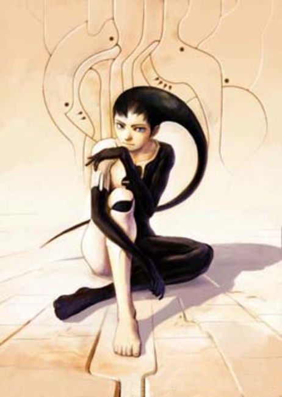
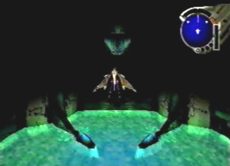
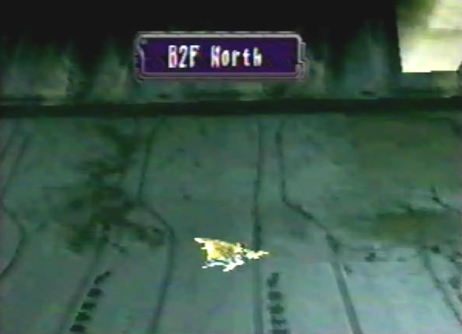
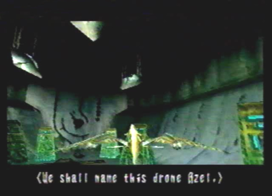
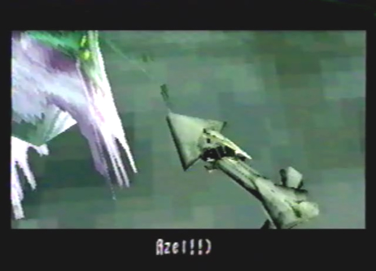
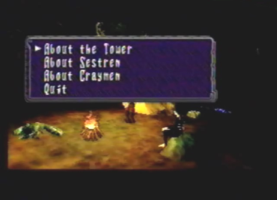
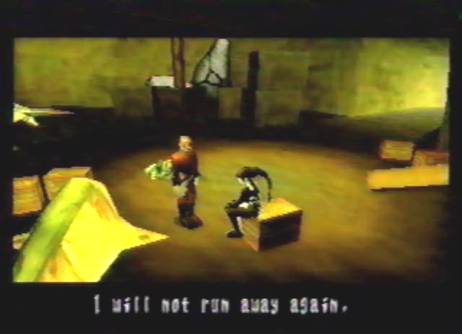

Diary Entry 29: Underground Ruins of Uru Final Visit The Homeland of the Drones Taking Zadoc's advice, I headed to the Underground Ruins of Uru, to search for Azel. After exploring the entire facility, there was only one place left to look. I headed for the Underground Dome, and proceeded to B2F North. Inside, I found a series of six information relics. Each one, gave me valuable information about the origin of the D units I had been collecting, as well as the creation of Azel. The D Units in fact, were part of a renegade project, called the Light Wing project. The project was terminated, but before termination, the scientists decided to scatter the project across the continent into twelve pieces, called D Units. The Light Wing, I learned, was also supposed to be the ultimate form of my dragon. Amazing! If I were to find all twelve D Units, I may just be able to see my dragon's ultimate form! Lastly, I learned that during Azel's creation, her life span was manipulated, allowing her to live for thousands of years, she may even be immortal for all I know. Apparently, before she could be completed, she was stolen during an attack on the facility. I had learned a great deal, but my search for Azel was not over. I pressed on. I found Azel in the northern most chamber on B2F North. She was surrounded by mutants! The dragon and I quickly defeated them and retreated with Azel, to camp. At camp, I asked Azel if she was born at the Underground Ruins of Uru. She told me she was not born, but created. I also asked her various questions about the Tower, Sestren, and Craymen. The Tower couldn't be stopped from our current position, we had to go inside. Then, Azel would be able to synchronize with it, opening the way to Sestren. When I asked about Sestren, she had heard the name, but didn't know any details. I also told her I was sorry about Craymen's death. He was my enemy, but honestly, I didn't know anymore. So many people died during those battles. Back at the Seekers' Stronghold Camp, Azel assured me that she wouldn't run away again. That was a relief! It was time to enter the Seekers' Stronghold, and attend the funeral ceremony.  |
|
| Divine
Overview |
 1. Return to the Underground Dome and enter the door directly above you. |
|
 2. You will now be at B2F North. |
 3. Be sure to examine the six information relics. You'll learn quite a bit about the Light Wing project and Azel's creation. |
 4. In the northern most chamber, you will find Azel, surrounded by Mutants. Go to her aid, and defeat the Mutants! |
|
 5. After the events at the Underground Ruins of Uru, Edge and Azel will rest at camp. While at camp, you can ask Azel about various topics. When you're done, return to the Seekers' Stronghold Camp. |
|
 6. Back at the Seekers' Stronghold Camp, Azel will assure you, that she will not run away again. That's a relief! Now head into the Seekers' Stronghold, and witness the funeral ceremony. |